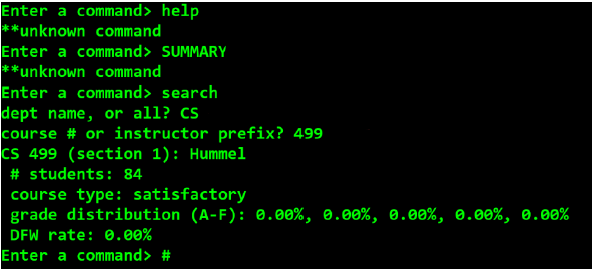

C++ and C programming
CTA Analysis Web Application

This application provides a graphical representation of the Chicago Transit Authority ridership and fetches the data from a database. You can find the link to the repo here.
Built Using: C#, MySQL, .NET
Grade Analysis Utility
Grade Analysis Utility is a console applicaton for any college and the departments in the college. It accepts a text file as input, the application will input the data, parse, and then accept commands from the user to search and analyze this data. In particular, the application will support the following 5 commands: Summary of a department or college, Search by course # or instructor prefix, List of courses with grading type of unknown, List of courses by DFW rate, List of courses by percentage of A letter grades. You can find the link to the repo here.
Built Using: C++
Balanced Symbol Checker
This program accepts any expression and returns with the message if the expression is balanced or what's missing. You can find a github link to the repo here.
Built Using: C
Netflix Database Console
It is a console application using C# and ADO.NET that retrieves data from a Netflix database residing in Azure. The user can enter the name of a movie --- this can be the movie’s full name such as “The King’s Speech”, or a partial match such as “king”. The program will then search for one or more movies that match, and output information about each movie: name, release year, average review, overall ranking, etc. You can find the github link to the repo here.
Built Using: C#, MySQL, Azure, ADO.NET